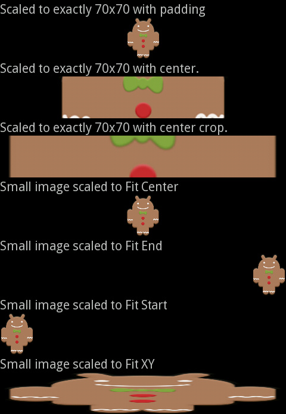

ImageWidget is a UI control that you can use to display a image.
void MyPage::onInit(Persistence* const p)
{
// create scene
mpScene = Scene::SceneFactory(this);
LinearController* layout = new LinearController(this);
ImgWdg = new ImageWidget(this);
layout->setOrientation(LinearController::VERTICAL);
// set image from resource
ImgWdg->setImageResource(com::gaia::R::drawable::sym_action_call);
// attach widget
layout->addWidget(ImgWdg);
mpScene->attachController(layout);
mpScene->setupSceneLayout();
}
Sets a Drawer/Bitmap as the content of this ImageWidget.
void MyPage::onInit(Persistence* const p)
{
// create scene
mpScene = Scene::SceneFactory(this);
LinearController* layout = new LinearController(this);
Resources* resources = mpScene->getResources();
// load from Drawer
Drawer* drawer = resources->getDrawer(R::drawable::beach);
ImageWidget* pImgWdgDr = new ImageWidget(this);
pImgWdgDr->setImageDrawer(drawer);
// load from Bitmap
Bitmap* pBitmap = gaia::graphics::BitmapFactory::decodeResource(*resources, R::drawable::beach);
ImageWidget* ImgWdgBmp = new ImageWidget(this);
ImgWdgBmp->setImageBitmap(pBitmap);
// attach widget
layout->addWidget(pImgWdgDr);
layout->addWidget(ImgWdgBmp);
mpScene->attachController(layout);
mpScene->setupSceneLayout();
}
Controls how the image should be resized or moved to match the size of this ImageWidget.
void MyPage::onInit(Persistence* const p)
{
// create scene
mpScene = Scene::SceneFactory(this);
LinearController* layout = new LinearController(this);
// create image widget
for (int i = 0; i < 7; i++) {
ImgWdg[0] = new ImageWidget(this);
ImgWdg[0]->setImageResource(R::drawable::gingerdroid);
ImgWdg[0]->setMaxHeight(70);
ImgWdg[0]->setMaxWidth(70);
ImgWdg[0]->setAdjustViewBounds(true);
layout->addWidget(ImgWdg[0]);
}
// Scaled to exactily 70*70 width padding
ImgWdg[0]->setScaleType(ImageWidget::CENTER_INSIDE);
// Scaled to exactily 70*70 width center
ImgWdg[1]->setScaleType(ImageWidget::CENTER);
// Scaled to exactily 70*70 width center crop
ImgWdg[2]->setScaleType(ImageWidget::CENTER_CROP);
layout->addWidget(ImgWdg[2]);
// Small image scaled to Fit Center
ImgWdg[3]->setScaleType(ImageWidget::FIT_CENTER);
// Small image scaled to Fit End
ImgWdg[4]->setScaleType(ImageWidget::FIT_END);
// Small image scaled to Fit Start
ImgWdg[5]->setScaleType(ImageWidget::FIT_START);
// Small image scaled to Fit XY
ImgWdg[6]->setScaleType(ImageWidget::FIT_XY);
mpScene->attachController(layout);
mpScene->setupSceneLayout();
}
Set a tinting color for the image.
void MyPage::onInit(Persistence* const p)
{
// create scene
mpScene = Scene::SceneFactory(this);
LinearController* layout = new LinearController(this);
ImgWdg = new ImageWidget(this);
ImgWdg = new ImageWidget(this);
ImgWdg->setImageResource(R::drawable::gingerdroid);
ImgWdg->setColorFilter(gaia::graphics::Color::argb(255, 0, 255, 0), gaia::graphics::PorterDuff::DST_ATOP);
layout->addWidget(ImgWdg);
mpScene->attachController(layout);
mpScene->setupSceneLayout();
}
ImgWdg->setColorFilter(gaia::graphics::Color::argb(255, 0, 255, 0), gaia::graphics::PorterDuff::LIGHTEN);
ImgWdg->setColorFilter(gaia::graphics::Color::argb(255, 0, 255, 0), gaia::graphics::PorterDuff::SRC_ATOP);
ImgWdg->setColorFilter(gaia::graphics::Color::argb(255, 0, 255, 0), gaia::graphics::PorterDuff::SRC_OUT);
ImageButton is the same with ImageWidget. There defferent is that ImageButton had default background.
void MyPage::onInit(Persistence* const p)
{
// create scene
mpScene = Scene::SceneFactory(this);
LinearController* layout = new LinearController(this);
layout->setOrientation(LinearController::VERTICAL);
ImgBtn[0] = new ImageButton(this);
ImgBtn[0]->setImageResource(com::gaia::R::drawable::sym_action_call);
ImgBtn[1] = new ImageButton(this);
ImgBtn[1]->setImageResource(com::gaia::R::drawable::sym_action_chat);
ImgBtn[2] = new ImageButton(this);
ImgBtn[2]->setImageResource(com::gaia::R::drawable::sym_action_email);
ImgBtn[3] = new ImageButton(this);
ImgBtn[3]->setImageResource(R::drawable::honeycomb);
ImgBtn[3]->setMaxWidth(100);
ImgBtn[3]->setAdjustViewBounds(true);
ImgBtn[3]->setScaleType(ImageWidget::CENTER_INSIDE);
ImgBtn[4] = new ImageButton(this);
ImgBtn[4]->setImageResource(R::drawable::gingerdroid);
ImgBtn[4]->setScaleType(ImageWidget::CENTER);
// attach widget
layout->addWidget(ImgBtn[0]);
layout->addWidget(ImgBtn[1]);
layout->addWidget(ImgBtn[2]);
layout->addWidget(ImgBtn[3]);
layout->addWidget(ImgBtn[4]);
mpScene->attachController(layout);
mpScene->setupSceneLayout();
}